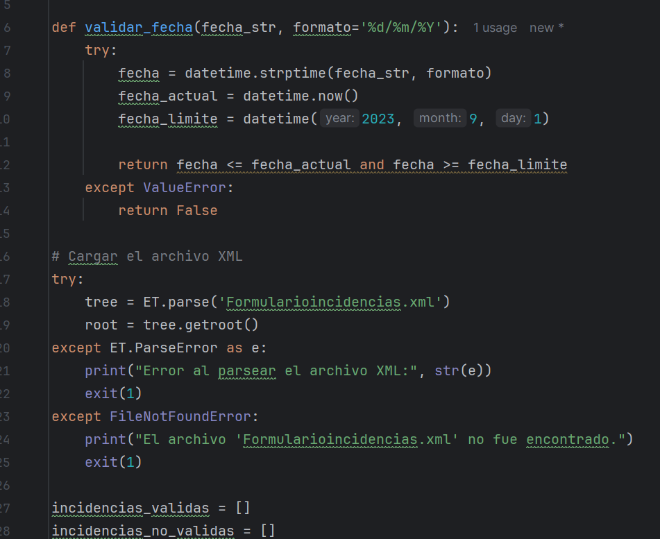

Conversión de Archivos
Este proyecto fue diseñado para convertir datos de un archivo CSV a formatos XML y JSON, optimizando la organización y relevancia de la información técnica.
Explora los detalles a continuación para conocer los objetivos, herramientas utilizadas y aprendizajes clave.
Objetivos
Crear una herramienta que facilite la gestión de datos estructurados y asegure que la información clave sea fácil de interpretar y reutilizar.
Herramientas Utilizadas
- Lenguajes: Python y JavaScript.
- Formato de entrada: Archivos CSV.
- Formato de salida: XML y JSON.
Lecciones Aprendidas
Este proyecto me permitió profundizar en la importancia de la transformación de datos y cómo los formatos estándar pueden mejorar la interoperabilidad entre sistemas.
En esta imagen se puede observar el proceso de estructuralizacion de las respuestas
